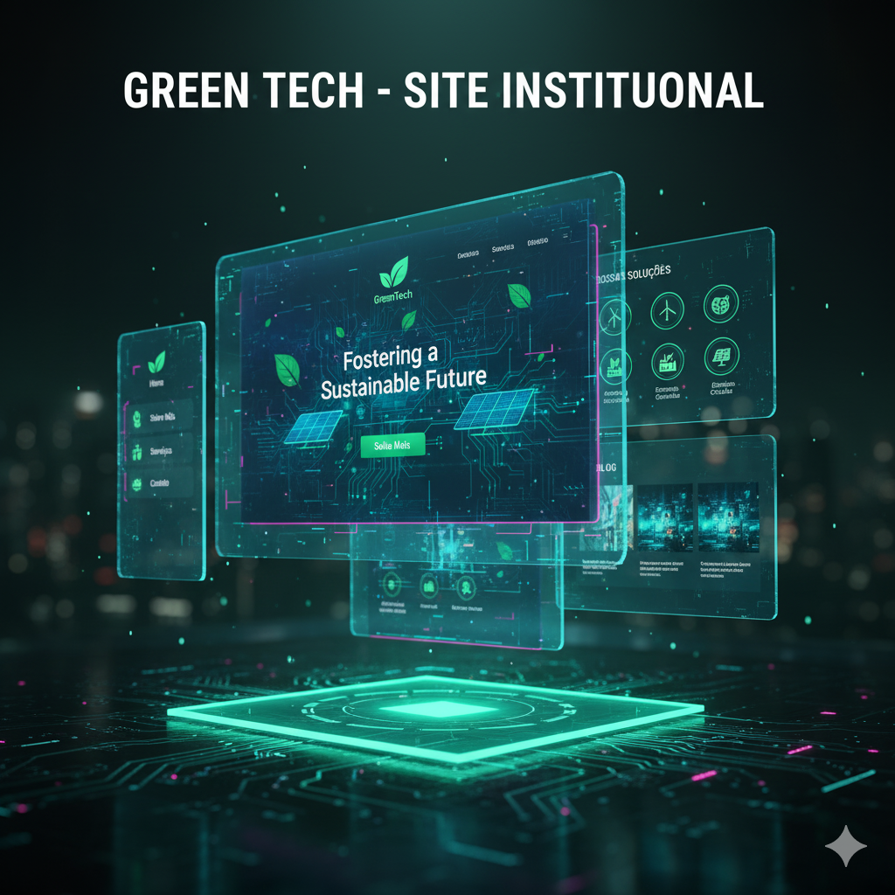

Nosso Portfólio
A TechConnect tem como missão desenvolver soluções digitais que conectam pessoas, negócios e tecnologia. Nosso portfólio reúne alguns dos principais projetos que representam o comprometimento da nossa equipe com inovação, qualidade e resultados.
Projetos em Destaque
| Projeto | Descrição | Tecnologias |
|---|---|---|
| Site Institucional - GreenTech  | Desenvolvimento de um site moderno e responsivo para uma startup sustentável, com foco em design limpo e experiência do usuário. |
HTML, CSS, JavaScript |
Sistema de Controle de Estoque

|
Criação de um sistema web simples para cadastro de produtos, controle de entrada e saída e geração de relatórios. |
HTML, CSS, PHP |
|
Landing Page - Evento TechDay
|
Página de divulgação com formulário de inscrição e layout responsivo, voltada para um evento universitário de tecnologia. |
HTML, CSS |
Protótipo de Dashboard Administrativo

|
Modelo visual de painel de controle com seções de métricas, gráficos e navegação lateral, desenvolvido para estudo de UX/UI. |
HTML, CSS (Flexbox, Grid) |
Cada projeto foi planejado com foco em boas práticas, usabilidade e design responsivo,
representando o compromisso da TechConnect em entregar soluções digitais de qualidade.